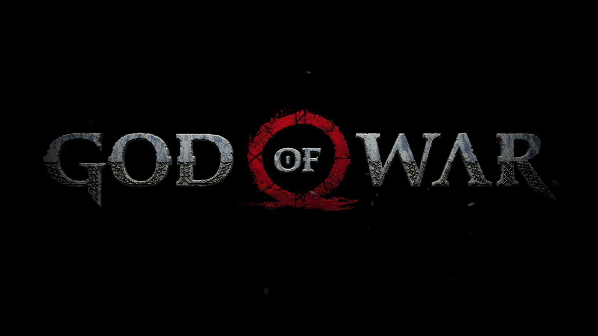

Gamestory
Games
GameStory is your ultimate destination for exploring the captivating narratives of your favorite video games. From epic adventures and mysterious quests to heartwarming tales and intense dramas, our site offers concise and engaging summaries of the stories behind the games you love. Whether you're a seasoned gamer looking to revisit the plot or a newcomer wanting to understand the lore before diving in, GameStory provides well-crafted overviews that bring each game's world to life. Dive into the stories that shape the gaming universe and immerse yourself in the rich tapestry of characters, plots, and adventures—all at GameStory. Enjoy the journey!
- God of War
God of War (2018) follows Kratos and his son Atreus on a journey to fulfill his late wife’s wish, facing Norse gods and monsters while exploring themes of fatherhood and redemption.
- Grand Theft Auto V
Grand Theft Auto V follows three criminals—Michael, Franklin, and Trevor—as they commit heists and navigate their chaotic lives in the fictional state of San Andreas.
- Marvel’s Spider-Man (2018)
Marvel’s Spider-Man (2018) is an open-world action-adventure game where players control Peter Parker, balancing his life as Spider-Man and facing the villain Mister Negative in a vibrant, fictionalized New York City.
